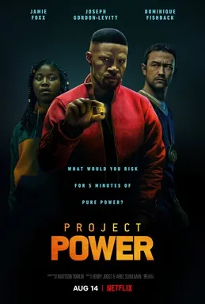

The genetics
The drug at the centre of the film is presented as a product of genetic engineering: each user's power derives from an animal, from a chameleon's camouflage to the shockwave of a pistol shrimp, and one of its makers calls it "the next evolution of the human species". The scientists behind it work for Teleios, a private defence contractor that experiments on a veteran, abducts his daughter because her inherited powers are the key to the drug, and turns a whole city into unwitting test subjects. In the final act, the head of the project justifies the kidnapping by invoking genetics and Henrietta Lacks, whose cells, taken without her consent in 1951, became the first immortalised human cell line, HeLa. The reference links the film's story to real histories of medical exploitation of Black Americans. The idea of acquiring animal traits from a pill is fantasy, though one commentator points to real experiments combining human and pig DNA as a distant parallel.
The story
In New Orleans, a mysterious distributor gives drug dealers a free pill called Power, which grants a superpower for five minutes, based on the abilities of an animal, but can also kill the user. Robin, a teenage dealer, supplies the drug to her friend Frank, a police officer who uses it to become bulletproof. Art, a former soldier, is hunting the source of the pill: after leaving the army he was experimented on by the defence contractor Teleios, and his daughter Tracy, born after those experiments, has natural powers and was abducted to serve as the drug's source. Art kidnaps Robin to reach the dealers, and the two learn that the city's users are test subjects in a mass trial to stabilise the drug. Frank discovers that his superiors are taking orders from Teleios and joins Art. On the company's ship, they rescue Tracy, and Art kills the project's leader, Dr. Gardner, before Tracy uses her healing powers to save him.